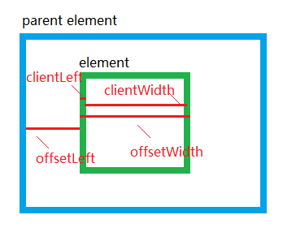
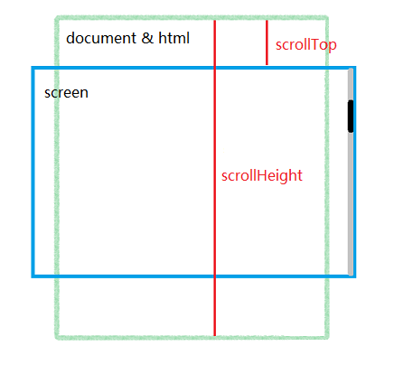

常用的元素视图属性
关键词:CSSOM视图模式 元素视图 鼠标位移 offset client scroll
本文节选了一些常用的、兼容性好的关于元素大小、位置等信息的属性
1.clientWidth和clientHeight
表示内容区域的高度和宽度，包括padding大小，但是不包括边框和滚动条
兼容性: 全
2.clientLeft和clientTop
表示内容区域的左上角相对于整个元素左上角的位置（包括边框）
兼容性:全
3.offsetWidth和offsetHeight
整个元素的尺寸（包括边框)
兼容性: 全
4.offsetLeft和offsetTop
表示相对于最近的祖先定位元素（CSS position 属性被设置为 relative、absolute 或 fixed 的元素）的偏移值
兼容性: 全
示例图片:

5.scrollLeft和scrollTop
表示元素滚动的像素大小。可读可写。
兼容性: 全
但要注意，对于页面滚动高度来说，chorme监听的是body的滚动高度，非chrome监听的是html的高度
兼容写法为：document.body.scrollTop || document.documentElement.srollTop
6.scrollWidth和scrollHeight
表示整个内容区域的宽高，包括隐藏的部分。如果元素没有隐藏的部分，则相关的值应该等用于clientWidth和clientHeight。当你向下滚动滚动条的时候，scrollHeight应该等用于scrollTop + clientHeight
示例图片:

7.鼠标clientX,clientY
相对于window，为鼠标相对于window的偏移
兼容性：全
8.鼠标pageX,pageY
鼠标相对于document的位移
兼容性: IE9+
参考文章:
http://www.w3.org/TR/cssom-view/
http://www.zhangxinxu.com/wordpress/?p=1907